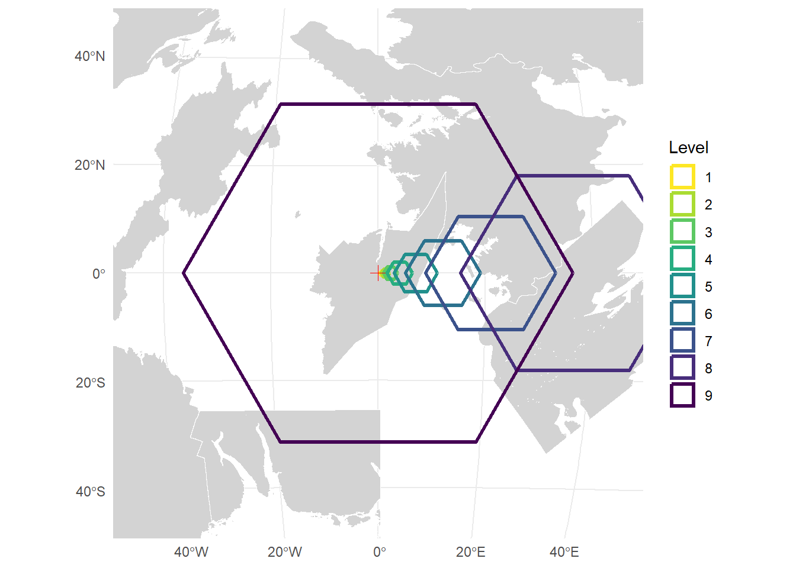
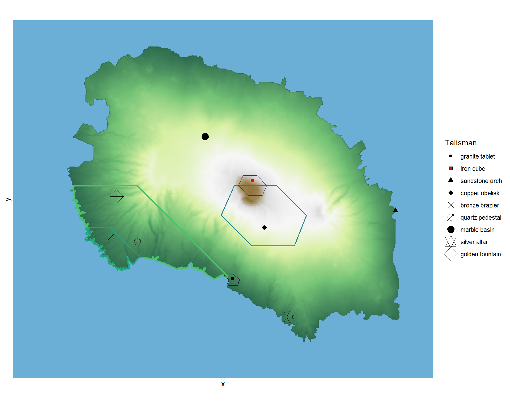

8 Divinity and Central Place

8.1 The Hierarchical Structure of Divine Power
Know ye that the great god RA and the most reclusive Sor Ler, being divinities of exceeding busyness, had not the leisure to hear every supplication nor to grant miracles at all hours of the day. And so they devised a hierarchy whereby their power might be distributed across the whole of the world: a grid of “sacred sites,” each possessed of miracles of varying potency, ordered with such rigour and such indifference to mountain, valley, or the habitations of folk that sites of great power sit full often at the bottom of the ocean, in the path of roaring rivers, in places exposed most cruelly to the elements — and only by rare chance right where they are needed.
I have called this a system, though the word is mine and not RA’s, and nobody living was there. The learned of Tusque hold it a plan and will draw it for you upon a slate. The marsh-folk say the sites were never placed at all but fell, as hail falls, and that what I take for a pattern is merely what falling things do. I cannot decide between them and shall not pretend to. What I can report is what the sites have made of the people who live among them, and that is the true matter of this chapter.
Now I have seen with mine own eyes that the sites come in nine forms, and these forms are known and recognized by all peoples of EART-H: the granite tablet, the iron cube, the sandstone arch, the copper obelisk, the bronze brazier, the quartz pedestal, the marble basin, the silver altar, and the golden fountain. So the reckoning goes in every land I have entered. There are besides persistent reports of a tenth form — a bowl of black glass, a thing of woven wire, or, from one sailor, a door standing open in a field with nothing behind it — and every province that reports the tenth places it in some other province. I record it regardless. Some hold that Sor Ler made a tenth kind for their own use and told nobody, which would account for it; others that Sor Ler made nothing at all and merely watched RA work, which would account for it equally well. The forms are consistent the world over, and appear in the unlikeliest places: atop frozen peaks, within deep caverns, upon barren islets. Of golden fountains I have stood before six in all my wanderings, which is five more than most who walk the roads will ever see; and there are a good many more scattered across this world that I shall never come to. And for reasons that no clerk nor philosopher hath yet explained to my satisfaction, they cannot be moved or destroyed by any force known to folk or beast; though I have come upon destroyed sites in my travels, so it must be possible by some agency beyond our ken. Nor will the folk of Amazonia allow that the sites are fixed: they say a whole shrine was carried off by a river in flood and set down eleven leagues distant, working still.
8.2 Mapping Divinity
Now I must speak of a matter most sorrowful to any cartographer: the vagaries of time have destroyed certain sites utterly, and others are thought destroyed but may yet one day be found by those bold enough to seek them in forsaken places. Yet for the most part the arrangement holds, whatever we decide to call it and whoever we decide made it, and access to divine power is had in a structured and orderly fashion. Here then I do set forth the maps I have drawn of the divinity grid and the accessibility of divine power across the whole of EART-H, that those who come after me may profit from my wanderings.

8.3 On the words of RA
Each site containeth its own devotional wisdom, and this I have proved true at every shrine I have visited. To attune oneself to the divine magic of the region, a suitably prepared supplicant need only approach the site and utter aloud the words carved upon it. These words cannot be altered or destroyed, yet I have found them sometimes hidden by jealous devotees who would prevent the unworthy from gaining access to such power. The aphorisms themselves are cryptic and passing strange, and often require deep contemplation ere their meaning be grasped. I have spent the better part of my wandering years collecting the aphorisms. I have been warned in three countries against one particular phrase, said to unmake whoever speaks it aloud. The three warnings did not agree upon the words, which is a comfort of a sort.
But herein lieth the great difficulty for those who would wield divine power: a devotee may be attuned to only one site at a time. To speak the aphorism of a new site is to release the bond with the old. For initiates of the lowest mysteries, whose granite tablets command but a small territory, this meaneth that a journey of even modest length will carry them beyond the reach of their power. The priests of the higher orders suffer less from this constraint, for a silver altar or a golden fountain casteth its influence over vast stretches of the world — yet such sites are rare, and the path to attunement most arduous, requiring prior devotion at sites of each lower tier in turn.
That a devotee may hold but one devotion is stated everywhere as law, and I have seen nothing to disprove it. I have nonetheless collected two accounts and leave them lying where they fell. A priest of the sixth order told me quietly, and not in front of his own initiates, that he had once spoken the words of a new site and found three days after that the old power had not left him; he told nobody for a year and has never learned why. And there is in the far south a golden fountain that is easily reached, whose words are plainly legible to anyone who cares to read them, and which has answered no supplicant within living memory. The priests of that country do not call it dead. They say it is listening for somebody else.
8.4 Of the Cartographers, and the Many Ways of Walking
It follows from the rule of one devotion that whoever would rise must go, and go far, and keep going. This is the largest fact about my own profession and I have never heard it stated plainly, so I shall state it: we are not wanderers because we love the road. We are wanderers because the ninth form will not receive anyone who has not stood before the eighth, and the eighth is never within a month’s walk of the seventh. The system compels the journey. Everything else about us follows from that compulsion.
We are called a guild, which is a courtesy. There is no hall, no charter, no master, and no one who may tell another cartographer to do anything whatsoever. We level — I am of the ninth grade myself, being of the Golden Fountain upon Kiliman, and I mention it only because it explains how a man may walk three continents and keep his power the whole way — but the grade confers no command. A cartographer of the ninth may not order one of the first to fetch water, and if she tried, the first would laugh, and would be right to.
What we do instead is carry. We carry letters, and seed, and news of prices, and the report of a bridge gone out; we carry medicine, and the healing that the sites confer, which mends the body and, at the higher grades, something of the land as well. I have watched a cartographer of the seventh grade kneel in a poisoned field on the Kiliman coast for the better part of a day, and I have seen what grew there the following spring. We settle disputes, badly. We are fed everywhere, which is the plain economics of the thing: a village that turns away a cartographer has turned away its physician, its post, and its only reliable account of the world beyond the ridge.
The mythos of our profession is contained in three words — the road teaches — and I have come to believe that the whole variety of our kind lies in what each of us takes those words to mean. I hold, for my part, that the road teaches by unsettling; that one walks in order to be corrected; and that a cartographer who returns from a journey with every conviction intact has wasted a journey. This view is not the majority.
There are those who hold that the road teaches, and that what it taught them is therefore true, and must be brought to those who have not walked. These are the preaching cartographers, and some of them are magnificent — I have seen a woman hold four hundred people in a market square for two hours upon the subject of an aphorism nine words long — and some of them are merely loud. Beyond them are those who hold that whoever will not walk cannot know, and that such people must therefore be governed by those who have; and beyond them, a smaller and worse set who have worked out that the powers granted at the higher sites are useful against unarmed people, and who use them so. We have no means of disciplining any of these, having no hierarchy with which to do it. That is the price of the freedom I have been praising, and I would not have the reader think I am unaware of it.
8.5 Of the Seizing of Shrines
A sacred site cannot be moved, and cannot be destroyed by any means known to me. It can, however, be surrounded, and this is a key to understanding the political history of much of EART-H.
The words must be read. That is the hinge. A supplicant must stand before the site and speak aloud what is carved upon it, and one who cannot read the letters cannot take the power, though they stand with their nose against the stone. It follows that whoever controls letters controls divinity, and I have travelled in more than one country where the withholding of reading from the common people is not carelessness but policy, pursued deliberately and with a clear understanding of what it purchases.
Seizure follows the same logic and is the ordinary business of lords: take the ground about a shrine, wall it, appoint who may approach. It works admirably. It works until a person attuned at a higher site walks in, at which point the whole apparatus — the wall, the guard, the appointed priest, the tax upon approach — becomes so much masonry, and the holder discovers that they have built their house upon the fourth rung of a ladder that has nine.
Whence the great and grim fact of this world: the most rigid societies upon EART-H sit upon its golden fountains, because nothing outranks a golden fountain and so nothing can come and undo the arrangement. I have entered only one of these places, for I like not to abase myself to the rule of another. It was orderly. The roads were excellent. Nobody who is not born to it learns to read, and the letters of the fountain are known to eleven people, and those eleven are the state.
And yet — and this is the thing I most want set down, and the reason I have written this chapter at all — an equal number of golden fountains sit at the heart of the freest places upon EART-H, and it is these I have chiefly sought out. Whoever held them looked at precisely the same arrangement and drew precisely the opposite conclusion: that if letters are the lock, then letters must be given away, and given away faster than they can be hoarded. So there are fountains with universities grown up around them like moss on a stone, where the aphorism is taught to any child who asks and printed on cheap paper and sent out with the cartographers; and where it is quietly held, by scholars who have thought about it longer than I have, that the sites were here before RA was, and that we have the story backward. The Golden Fountain upon Kiliman is such a place. I was raised beside it, which the reader should weigh against everything I have just written.
Here I set down a few of the aphorisms I have myself recorded in my travels, with notes upon their location and the form of the site that beareth them:
| Form of the Site | Where I Found It | The Inscription |
|---|---|---|
| granite tablet | 25.7°S, 70.7°E | “A book is as private and consensual as sex.” –Chuck Palahniuk, Haunted |
| iron cube | 18.7°S, 72.2°E | “Beauty is a heart with wings.” –A.D. Posey |
| sandstone arch | 20.8°S, 82.7°E | “Take a walk outside - it will serve you far more than pacing around in your mind.” –Rasheed Ogunlaru |
| copper obelisk | 22.1°S, 73.0°E | “…to be able to enjoy the life you have spent, is to live it twice.” –Marcus Valerius Martialis, Epigrams |
| bronze brazier | 22.7°S, 61.8°E | “Our whole life passes asking only one question to ourselves, “I did the same or more hard work than the one standing on top of my field. Why wasn’t I chosen for it?” –Bhavik Sarkhedi |
| quartz pedestal | 23.1°S, 63.7°E | “The greatest trick you can teach an old dog is how to learn new tricks.” –J.S. Davey |
| marble basin | 15.5°S, 68.7°E | “Women forget all the things they don’t want to remember and remember everything they don’t want to forget.” –Zora Neale Hurston |
| silver altar | 28.5°S, 75.0°E | “…the social mould civilization fits us into have no more relation to our actual shapes than the conventional shapes of the constellations have to the real star-patterns. I am called Mrs. Richard Phillotson, living a calm wedded life with my counterpart of that name. But I am not really Mrs. Richard Phillotson, but a woman tossed about, all alone, with aberrant passions, and unaccountable antipathies…” –Thomas Hardy |
| golden fountain | 19.8°S, 62.2°E | “A poem can’t free us from the struggle for existence, but it can uncover desires and appetites buried under the accumulating emergencies of our lives, the fabricated wants and needs we have had urged on us, have accepted as our own. It’s not a philosophical or psychological blueprint; it’s an instrument for embodied experience.” –Adrienne Rich, What is Found There: Notebooks on Poetry and Politics |

The divinity grid is constructed using a hierarchical hexagonal grid system based on Christaller’s Central Place Theory (Christaller 1966). This is a nod to my background in economic geography but its significance is to set up an alternative basis for power that concerns the control of territory without basis in agriculture. It also sets up a character type in my imagination that is a cross between an itinerant priest and one of the Enlightenment era explorers like my sometimes hero Alexander von Humboldt (Wulf 2015).
My reading list for this chapter is quite extensive even though it is relatively minor in terms of world construction more broadly. I want to sit with this idea and explore its connection to religion and territoriality. Moreover, religion and territoriality have materialized in a wide range of forms over the years, so it is an excellent stopping point to explore variation beyond the Christian European notion of pantheon and priest that dominates so much of my own knowledge. Moreover, there is an important thread of literature in geography that examines exploration and science as important to imperial projects even as the dissemination of knowledge is understood as democratizing. I want to include those threads here as well.
On sacred space, territory, and control
- Human Territoriality: Its Theory and History, Robert Sack (Sack 1986) — territoriality as the strategy of controlling people by controlling area, worked out partly through the Catholic Church.
- To Take Place: Toward Theory in Ritual, Jonathan Z. Smith (Smith 1987) — place is not inherently sacred; sacrality is produced by ritual labour and emplacement.
- The Graves of Tarim, Engseng Ho (Ho 2006) — a Hadrami diaspora held across the Indian Ocean by genealogy, texts, and the graves of ancestors.
- Ritual Alliances of the Putian Plain, Kenneth Dean and Zheng Zhenman (Dean and Zheng 2010) — temple networks organising territory in coastal Fujian, mapped village by village.
- God Is Red, Vine Deloria Jr. (Deloria 2003) — religions of place set against religions of time, and what is lost when the sacred becomes portable.
On learning and shared knowledge
- The Implications of Literacy, Brian Stock (Stock 1983) — how medieval literacy produced “textual communities” bound by a shared text and whoever could interpret it.
- The Calligraphic State, Brinkley Messick (Messick 1993) — textual authority, recitation, and domination in highland Yemen.
- Wisdom Sits in Places, Keith Basso (Basso 1996) — Western Apache place-names as moral instruction, and landscape as the thing that teaches.
- The Nature of the Book, Adrian Johns (Johns 1998) — print did not automatically fix or democratise knowledge; credibility had to be manufactured.
On the guardianship of truth
- The Formation of a Persecuting Society, R. I. Moore (Moore 2007) — persecution as machinery built by a literate clerical elite rather than a popular reflex.
- The Cheese and the Worms, Carlo Ginzburg (Ginzburg 1980) — a miller who read on his own, built a cosmology from it, and was burned.
- Genealogies of Religion, Talal Asad (Asad 1993) — religion as constituted through disciplinary power rather than as an essence of belief.
- Sufism: A Global History, Nile Green (Green 2012) — shrines, saintly lineages, and the long quarrel between shrine-based practice and scripturalist reform.
On the travelling knower
- Imperial Eyes, Mary Louise Pratt (Pratt 2008) — scientific travel writing as an imperial genre, and the “anti-conquest” pose of the naturalist who merely observes.
- Geography Militant, Felix Driver (Driver 2001) — how the figure of the explorer was culturally manufactured, contested, and policed.
- Putting Science in Its Place, David Livingstone (Livingstone 2003) — knowledge bears the marks of the places where it was made.
- Science in Action, Bruno Latour (Latour 1987) — “immutable mobiles” and “centres of calculation”: how travellers bring the world home in forms that survive the journey.
- Charles Darwin: Voyaging, Janet Browne (Browne 1995) — the Beagle years, and how a long journey rebuilt a mind.
Predecessors, in Persia and beyond
- Islam and Travel in the Middle Ages, Houari Touati (Touati 2010) — rihla, travel undertaken in search of knowledge, as a religious and epistemic obligation.
- Alberuni’s India, al-Biruni (al-Biruni 1910) — a Persian polymath’s account of Indian science, religion and custom, written around 1030 to be accurate rather than flattering.
- The Adventures of Ibn Battuta, Ross Dunn (Dunn 2012) — the fourteenth-century jurist whose credentials fed and housed him across some seventy-five thousand miles.
- The Silk Road Journey with Xuanzang, Sally Hovey Wriggins (Wriggins 2004) — a seventeen-year journey to India for texts, and the carrying of them back.